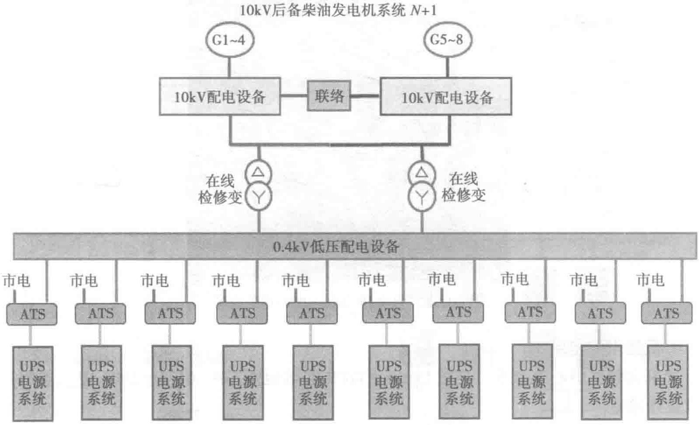
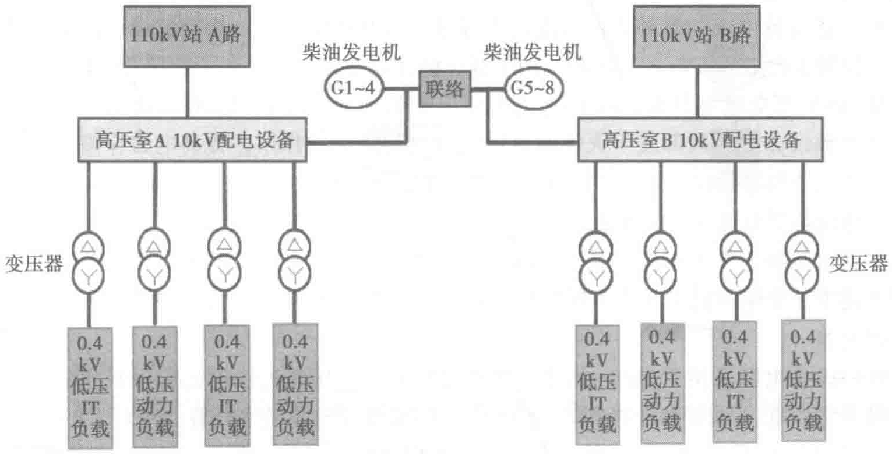

立的后台监控系统，可以实时检测电压、电流、频率、有功功率、无功功率、变压器的温度，监视系统运行方式，监测实时电压、电流变化曲线并生成图表，生成能源消耗及谐波分析报表，形成控制、监视、告警一体化监控平台。


市电10kV系统重要检测参数均并行上传至运维监控系统，使每一个重点供电环节实现无死角无盲区监视。
PDF第287页 · 已逐页校对
立的后台监控系统，可以实时检测电压、电流、频率、有功功率、无功功率、变压器的温度，监视系统运行方式，监测实时电压、电流变化曲线并生成图表，生成能源消耗及谐波分析报表，形成控制、监视、告警一体化监控平台。


市电10kV系统重要检测参数均并行上传至运维监控系统，使每一个重点供电环节实现无死角无盲区监视。